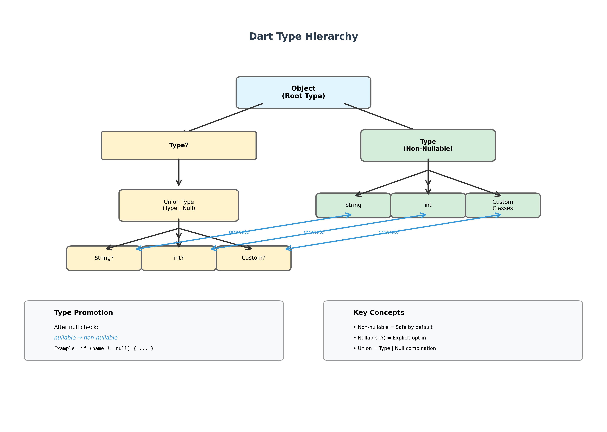
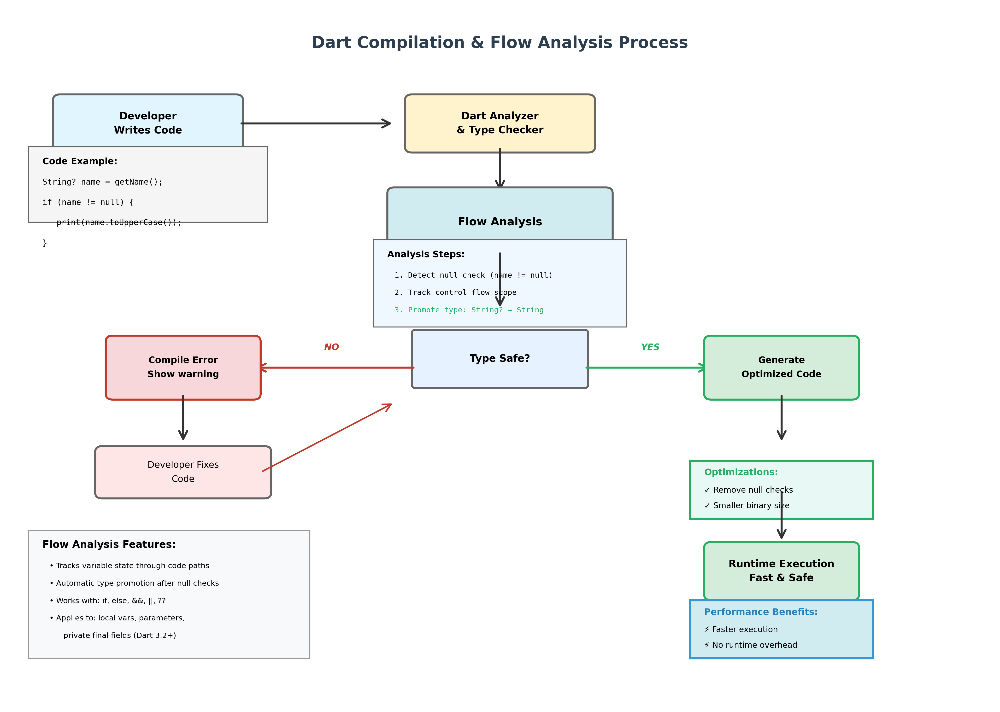

Mastering Dart's Sound Null Safety
Building Robust and High-Performance Applications
A Comprehensive Guide with Visual Diagrams and Real-World Examples
Table of Contents
- 1. Executive Summary
- 2. Abstract
- 3. Introduction
- 4. Understanding the Null Reference Problem
- 5. Core Principles of Sound Null Safety
- 6. Essential Syntax and Operators
- 7. Flow Analysis and Type Promotion
- 8. Real-World Applications
- 9. Visual Representations
- 10. Best Practices and Design Patterns
- 11. Migration Strategy
- 12. Performance Optimization
- 13. Conclusion
- 14. Further Reading
Executive Summary
Overview
This comprehensive guide explores Dart's sound null safety system, a transformative feature that eliminates one of programming's most costly problems: null reference errors. By shifting null checks from runtime to compile-time, Dart provides developers with stronger safety guarantees and significant performance improvements.
Key Takeaways
- Non-nullable by default: Variables cannot be null unless explicitly marked with '?', making code safer by default
- Compile-time safety: Null reference errors are caught during development, not in production
- Performance gains: Eliminated runtime null checks result in smaller binaries and faster execution
- Flow analysis: Intelligent type promotion automatically converts nullable types after null checks
- Real-world applicability: Practical examples demonstrate null safety in e-commerce, authentication, and API handling
- Complete migration: Dart 3 requires full null safety, making migration essential for modern development
What You'll Learn
- The historical context and billion-dollar mistake of null references
- Two core principles: non-nullable by default and full soundness
- Essential operators: ?, !, ??, and the late keyword
- How flow analysis tracks variable states and promotes types
- Three complete real-world implementation examples
- Best practices for designing null-safe APIs
- Step-by-step migration strategy for existing codebases
- Performance optimization techniques leveraging null safety
Visual Aids Included
This guide includes four professional diagrams:
- Decision Flow Diagram: Complete flowchart for choosing the right null safety approach
- Before/After Comparison: Visual contrast between traditional and modern null handling
- Type Hierarchy: Complete type system structure with promotion paths
- Compilation Process: End-to-end workflow showing analysis and optimization
Who Should Read This
- Dart and Flutter developers transitioning to null safety
- Software architects designing robust type-safe systems
- Technical leads managing null safety migration projects
- Students and educators learning modern programming language design
- Anyone interested in eliminating null reference errors from their code
Time Investment
Reading time: 35-45 minutes for complete coverage
Implementation time: Examples can be tested immediately, full migration varies by project size
Abstract
Null reference errors have plagued software development for decades, costing billions in debugging time and system failures. Dart addresses this fundamental issue through sound null safety, a type system feature that transforms potential runtime crashes into compile-time errors. This article explores the principles, implementation, and practical applications of Dart's null safety system, providing developers with comprehensive guidance for writing more reliable code.
Introduction
In 1965, Tony Hoare introduced the null reference into the ALGOL programming language. Decades later, he referred to it as his billion-dollar mistake, acknowledging the countless errors, vulnerabilities, and system crashes it caused. Dart's sound null safety represents a modern solution to this historical problem, fundamentally changing how developers handle potentially absent values.
Introduced as one of the most significant changes since Dart version 2.0, null safety shifts the burden of preventing null reference errors from runtime to compile-time. This transformation enables developers to catch mistakes earlier in the development cycle, resulting in more reliable applications and improved performance through compiler optimizations.
Understanding the Null Reference Problem
The Traditional Approach
Before null safety, attempting to call a method on a null object resulted in runtime errors. Consider this traditional Dart code:
String getUserName(User user) {
return user.name.toUpperCase();
}If the user parameter is null, this code throws a NoSuchMethodError at runtime. The application crashes, potentially losing user data and damaging the user experience. Worse, these errors often appear in production environments where they're most costly.
Real-World Impact
Consider a mobile banking application processing a transaction:
void processTransaction(Transaction txn) {
double fee = txn.account.calculateFee();
txn.account.deduct(fee);
txn.complete();
}Without null safety, if the transaction account becomes null due to a network error or race condition, the application crashes mid-transaction. This leaves the system in an inconsistent state, potentially debiting the user without completing the transaction. Such failures erode user trust and require extensive error recovery mechanisms.
Core Principles of Sound Null Safety
Dart's null safety system is built on two fundamental principles that work together to eliminate null reference errors:
Principle 1: Non-Nullable by Default
Every variable in Dart is non-nullable unless explicitly marked otherwise. This design decision stems from research showing that non-null values are the most common case in real-world APIs. By making non-nullability the default, Dart encourages safer code patterns.
// Non-nullable - cannot be null
String name = 'John';
int age = 30;
// Nullable - explicitly marked with ?
String? middleName = null;
int? optionalAge = null;This approach forces developers to consciously decide when null is an acceptable value, making code intent explicit and reducing accidental null assignments.
Principle 2: Full Soundness
Dart's type system provides a guarantee: if a variable has a non-nullable type, it can never be null at runtime. This soundness property enables powerful compiler optimizations because the compiler can trust type declarations completely.
The benefits of soundness include:
- Smaller binary sizes through eliminated null checks
- Faster execution by skipping unnecessary runtime validations
- Guaranteed safety when calling methods on non-nullable objects
- Better developer tooling through precise type information
Essential Syntax and Operators
Dart provides several language features for working effectively with null safety. Understanding these tools is crucial for writing robust code.
Nullable Type Declaration
The question mark operator declares that a variable can hold null values. This creates a union type combining the underlying type with the Null type.
int? nullableNumber; // Can be int or null
String? optionalText; // Can be String or null
User? currentUser; // Can be User or null
// Without ?, these would be compilation errors:
// int number; // Error: must be initialized
// String text; // Error: must be initializedThe Null Assertion Operator
The exclamation mark operator casts away nullability, asserting that a value is definitely not null. Use this operator sparingly and only when you can logically guarantee non-nullness.
String? getUserEmail() {
return currentUser?.email;
}
void sendEmail() {
// Using ! asserts email is not null
String email = getUserEmail()!;
emailService.send(email);
}Better approach using proper null checking:
void sendEmail() {
String? email = getUserEmail();
if (email != null) {
// email is automatically promoted to String
emailService.send(email);
} else {
showError('No email available');
}
}The Null-Coalescing Operator
The double question mark operator provides elegant null checking with default values. It returns the left expression unless it's null, in which case it returns the right expression.
String displayName = user.nickname ?? user.fullName ?? 'Guest';
// Equivalent to:
// String displayName;
// if (user.nickname != null) {
// displayName = user.nickname;
// } else if (user.fullName != null) {
// displayName = user.fullName;
// } else {
// displayName = 'Guest';
// }This operator is preferred over ternary operators because it clearly conveys intent and only evaluates the left expression once, avoiding potential side effects from multiple evaluations.
The Late Keyword
The late modifier enables delayed initialization for non-nullable variables, addressing scenarios where immediate initialization isn't possible or desirable.
class DatabaseConnection {
late Database db;
Future<void> initialize() async {
db = await Database.connect();
}
void query(String sql) {
// db must be initialized before use
return db.execute(sql);
}
}The late keyword works in three ways:
- Without initializer: defers initialization and inserts runtime checks
- With initializer: makes initialization lazy until first access
- With final: allows one-time runtime assignment of immutable values
late as a last resort when you can guarantee the variable is initialized before access. Avoid it if you need to check initialization status.
Flow Analysis and Type Promotion
Dart's compiler performs sophisticated control flow analysis to track the state of variables throughout code execution. This analysis automatically promotes nullable types to non-nullable when safety can be proven.
Automatic Type Promotion
When you check that a nullable variable is not null, Dart promotes it to its non-nullable type within that scope:
void processUser(String? name) {
if (name != null) {
// Inside this block, name is promoted to String
print(name.toUpperCase());
print(name.length);
}
}This promotion works for local variables, parameters, and private final fields introduced in Dart version 3.2. The compiler tracks all code paths to ensure the variable cannot be null at the point of use.
Smart Null Checking
Flow analysis detects redundant null checks and issues warnings:
void example(String? input) {
if (input != null) {
// Warning: unnecessary null check
String? result = input?.toUpperCase();
// Correct: input is already promoted
String result = input.toUpperCase();
}
}This intelligent analysis transforms dynamic runtime correctness into provable static correctness, allowing most existing Dart null-checking code to work seamlessly under null safety.
Real-World Applications
Understanding null safety theory is essential, but seeing it applied in realistic scenarios demonstrates its practical value.
Example 1: E-commerce Shopping Cart
An online shopping application must handle various optional data safely:
class ShoppingCart {
List<Product> items = [];
String? promoCode;
Address? shippingAddress;
double calculateTotal() {
double subtotal = items.fold(0, (sum, item) => sum + item.price);
// Apply discount if promo code exists
double discount = promoCode != null
? calculateDiscount(promoCode, subtotal)
: 0;
// Add shipping based on address
double shipping = shippingAddress?.country == 'US' ? 5.99 : 12.99;
return subtotal - discount + shipping;
}
String getDeliveryMessage() {
return shippingAddress != null
? 'Delivering to ${shippingAddress.street}'
: 'Please add a delivery address';
}
}This design makes optional data explicit. The compiler prevents accessing nullable properties without checks, eliminating entire classes of bugs where missing addresses or promo codes cause crashes.
Example 2: User Authentication System
Authentication systems commonly deal with optional user states:
class AuthenticationService {
User? _currentUser;
bool get isAuthenticated => _currentUser != null;
User get currentUser {
final user = _currentUser;
if (user == null) {
throw StateError('No authenticated user');
}
return user;
}
Future<void> login(String email, String password) async {
final user = await authApi.authenticate(email, password);
_currentUser = user;
}
void logout() {
_currentUser = null;
}
String getUserDisplayName() {
return _currentUser?.fullName ?? 'Guest User';
}
}The nullable currentUser field makes the authentication state explicit. The getter provides safe access by throwing a clear error when accessed incorrectly, while getUserDisplayName gracefully handles unauthenticated states with a default value.
Example 3: API Response Handling
Network APIs often return partial or optional data:
class UserProfile {
final String id;
final String username;
final String? bio; // Optional biography
final String? avatarUrl; // Optional profile picture
final DateTime? lastActive; // May not be available
UserProfile({
required this.id,
required this.username,
this.bio,
this.avatarUrl,
this.lastActive,
});
String getDisplayBio() {
return bio ?? 'No bio available';
}
String getActivityStatus() {
final lastSeen = lastActive;
if (lastSeen == null) return 'Activity unknown';
final difference = DateTime.now().difference(lastSeen);
if (difference.inMinutes < 5) return 'Active now';
if (difference.inHours < 1) return 'Active recently';
return 'Last seen ${difference.inDays} days ago';
}
}This pattern clearly documents which fields are optional in the API contract. The type system ensures every access to optional data includes appropriate null handling, preventing crashes when the API returns incomplete profiles.
Visual Representations
The following diagrams illustrate key concepts in Dart's null safety system.
Diagram 1: Null Safety Decision Flow

This flowchart shows how to determine the appropriate approach based on whether a value can be absent and how you need to access it. Green boxes indicate compile-time safe paths, while yellow boxes indicate approaches requiring extra caution.
Diagram 2: Before and After Null Safety

Notice how runtime crashes on the left are transformed into compile-time guarantees on the right, with the added benefit of faster execution through eliminated runtime checks.
Diagram 3: Type System Hierarchy
This diagram illustrates how nullable types are unions of their base type and Null, and how type promotion allows safe conversion from nullable to non-nullable types after null checks.
Diagram 4: Flow Analysis and Compilation
This process diagram shows how Dart's analyzer uses flow analysis to track variable states, promote types, and generate optimized code. Errors are caught at compile-time, while successful compilation produces efficient, runtime-safe code.
Summary Tables
| Concept | Description | Example |
|---|---|---|
| Non-Nullable Type | Default type that cannot hold null values | String name = 'John'; |
| Nullable Type | Type marked with ? that can hold null | String? nickname = null; |
| Type Promotion | Automatic conversion from nullable to non-nullable after null check | if (name != null) { ... } |
| Null Union | A nullable type is a union of Type and Null | int? = int | Null |
| Operator | Usage | Safety Level | Use Case |
|---|---|---|---|
? |
String? name |
Safe | Declare nullable types |
! |
name! |
Unsafe | Assert non-null (use sparingly) |
?? |
name ?? 'Guest' |
Safe | Provide default values |
?. |
user?.email |
Safe | Safe member access |
late |
late String config |
Moderate | Delayed initialization |
Best Practices and Design Patterns
Adopting null safety effectively requires understanding proven patterns and avoiding common pitfalls.
Minimize Null Assertion Usage
Repeated use of the null assertion operator throughout code indicates design problems:
// Poor design - repeated assertions
void processOrder() {
print(auth.user!.name);
sendEmail(auth.user!.email);
logActivity(auth.user!.id);
}Better approach using local variable with type promotion:
// Good design - single check with promotion
void processOrder() {
final user = auth.user;
if (user == null) {
showLoginPrompt();
return;
}
// user is now promoted to non-nullable
print(user.name);
sendEmail(user.email);
logActivity(user.id);
}Design Clear API Contracts
Consider whether accessing a property when null should be fatal or fail gracefully.
Prefer Null-Coalescing for Defaults
When a nullable value must produce a non-null result, the null-coalescing operator is the safest and most idiomatic choice.
Handle Edge Cases Explicitly
Rather than suppressing null safety with assertions, handle edge cases with clear logic that documents assumptions and provides clear error messages.
Migration Strategy
Transitioning existing codebases to null safety requires careful planning and execution. Dart version 3 requires full null safety support, making migration essential for modern development.
Migration Process
- Update all dependencies to null-safe versions
- Set minimum SDK constraint to 2.12.0 or higher in pubspec.yaml
- Run static analysis to identify required changes
- Use dart migrate tool for automated assistance (supported through Dart 2.19)
- Manually review and adjust automated changes
- Thoroughly test all code paths
Performance Optimization
Sound null safety enables significant performance improvements through compiler optimizations. These benefits accumulate throughout application execution, especially in performance-critical code paths.
Eliminated Runtime Checks
Without null safety, every property access potentially requires a null check. With null safety, the compiler guarantees both user and user.name are non-null, so generated code skips null checks entirely.
In tight loops or frequently-called methods, eliminating these checks produces measurable performance improvements through reduced instruction count and improved branch prediction.
Smaller Binary Size
Fewer runtime checks translate directly to smaller compiled binaries. This benefits mobile applications where app size impacts download times and device storage. Applications with extensive business logic see the most significant size reductions.
The combination of smaller binaries and faster execution makes null safety particularly valuable for Flutter applications, where performance and package size directly affect user experience.
Conclusion
Dart's sound null safety represents a fundamental advancement in programming language design. By transforming potential runtime crashes into compile-time errors, it shifts the burden of correctness from runtime debugging to design-time decision-making.
The system's two core principles work synergistically: non-nullable by default ensures safer defaults, while full soundness enables compiler optimizations and stronger guarantees. Together with flow analysis and type promotion, these features create a development experience that is both safer and more productive.
Real-world applications demonstrate null safety's practical value across diverse domains. From e-commerce shopping carts to authentication systems to API response handling, the explicit handling of optional values prevents entire categories of bugs while making code intent clearer.
The performance benefits compound these advantages. Eliminated null checks result in faster execution and smaller binaries, particularly important for mobile applications where resources are constrained and user experience is paramount.
As the Dart ecosystem fully adopts null safety, developers gain access to a more robust and efficient platform for building reliable applications. The journey from Tony Hoare's billion-dollar mistake to Dart's comprehensive solution demonstrates the evolution of programming language design toward systems that prevent errors by construction rather than detection.
For developers beginning their null safety journey, the investment in understanding these concepts pays immediate dividends through fewer bugs, clearer code, and better performance. The combination of strict compile-time checks and intelligent flow analysis creates a development experience that guides developers toward correct solutions while maintaining the expressiveness that makes Dart productive and enjoyable.
Further Reading
- Dart Official Documentation: Sound Null Safety
- Understanding Null Safety (dart.dev)
- Migrating to Null Safety Guide
- Dart Language Specification
- Null Safety FAQ and Common Patterns